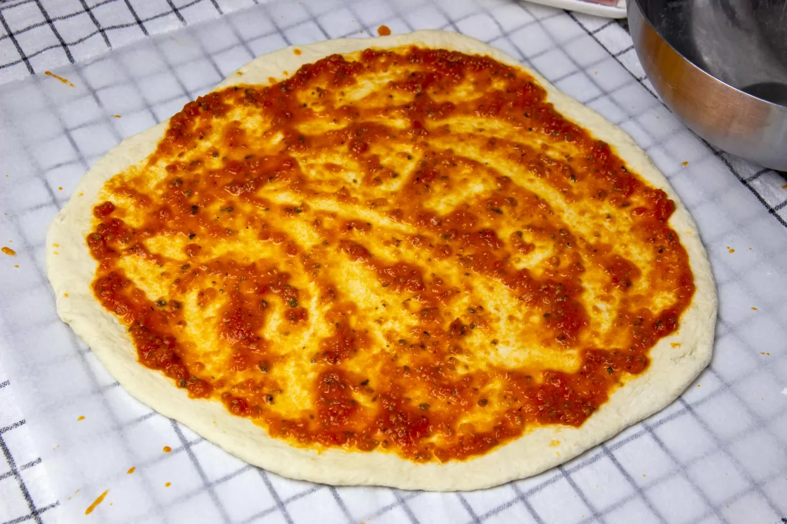
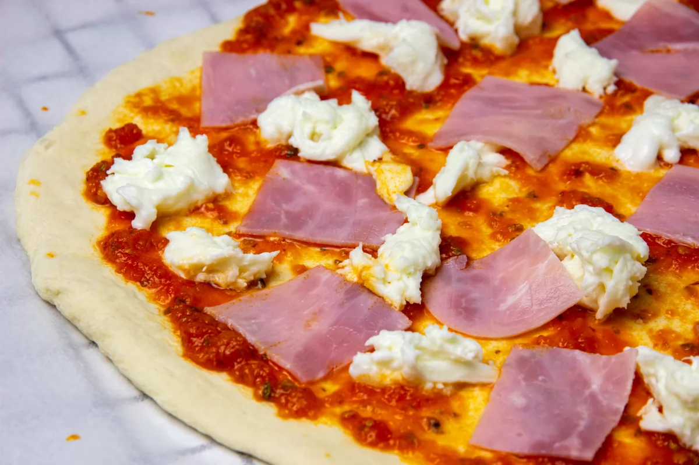
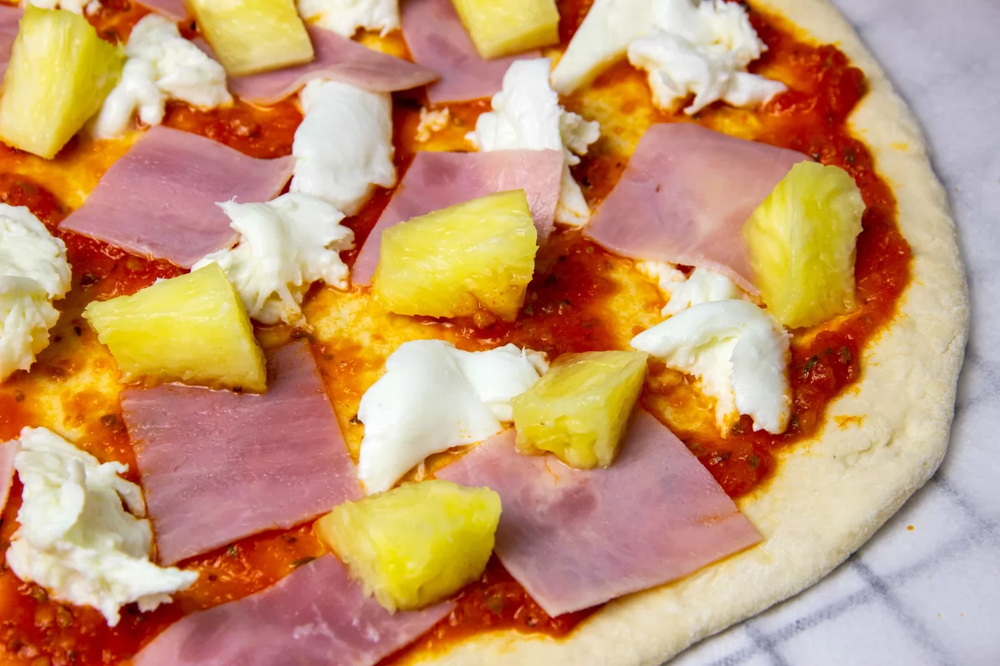
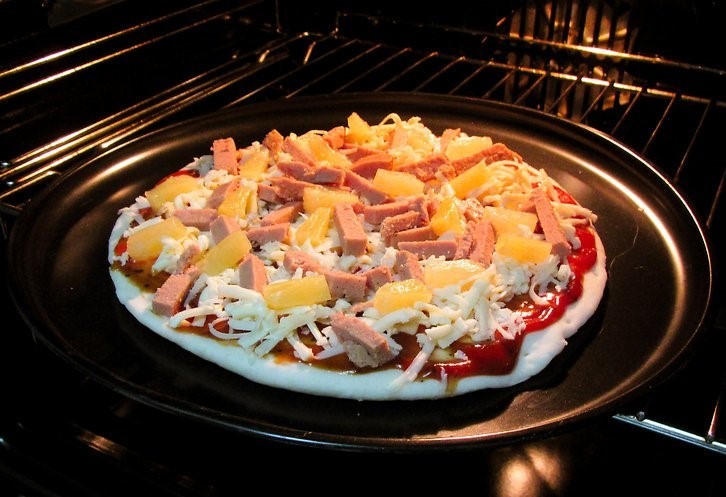
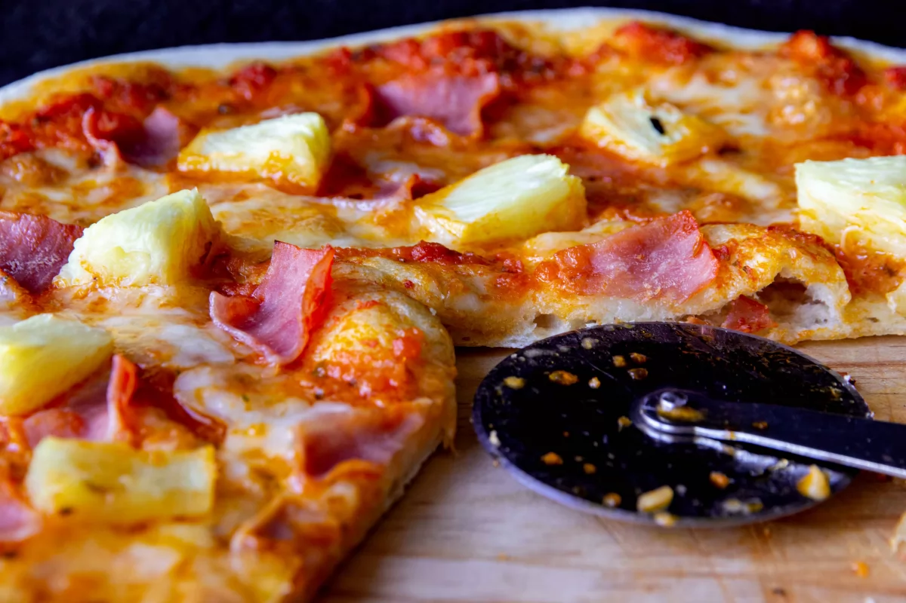

Enlace al menú
Enlace al menú
Pizza Hawaiana
Indice
Ingredientes
- 150 ml de salsa de tomate con orégano
- 60 g de jamón cocido
- 2-3 rodajas de piña natural
- 200 g de mozzarella fresca de búfala o de barra rallada
- 1 masa de pizza
Paso a Paso
- Precalentamos el horno a 230 ºC con calor arriba y abajo. En la base de la pizza extendemos una capa de salsa de tomate con orégano. No debemos pasarnos, con un par de cucharadas o 3 de tomate bastará.

- Le ponemos la mozzarella de búfala en trozos o la mozzarella en barra rallada y le añadimos el jamón cocido.

- El siguiente paso será incorporar a la pizza la piña en trozos. Importante secar un poco la piña con un papel de cocina para que no suelte mucho jugo en la pizza.

- Metemos la pizza al horno durante 15 minutos aproximadamente. La sacamos y la cortamos con ayuda de un cuchillo o de un corta-pizzas.

Resultado final

Enlace a la parte de arriba